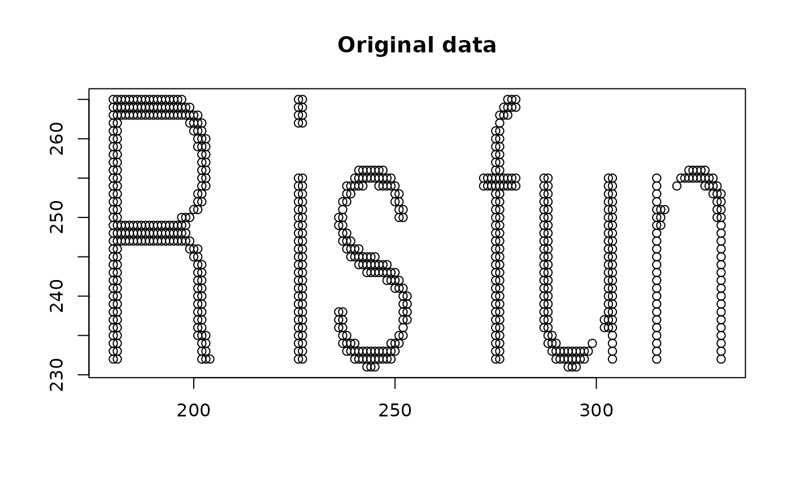

This function applies the surreal method to a text string. It first creates a temporary plot with the text, processes the image, and then applies the surreal method to the data.
Usage
surreal_text(
text = "hello world",
cex = 4,
R_squared = 0.3,
p = 5,
n_add_points = 40,
max_iter = 100,
tolerance = 0.01,
verbose = FALSE
)Arguments
- text
Character. A plain text message to be plotted. Default is "hello world".
- cex
Numeric. A value specifying the relative size of the text. Default is 4.
- R_squared
Numeric. Desired R-squared value. Default is 0.3.
- p
Integer. Desired number of columns for matrix X. Default is 5.
- n_add_points
Integer. Number of points to add in border transformation. Default is 40.
- max_iter
Integer. Maximum number of iterations for convergence. Default is 100.
- tolerance
Numeric. Criteria for detecting convergence and stopping optimization early. Default is 0.01.
- verbose
Logical. If TRUE, prints progress information. Default is FALSE.
See also
surreal() for details on the surreal method parameters.
Examples
# Create a surreal plot of the text "R is fun" appearing on one line
r_is_fun_result <- surreal_text("R is fun", verbose = TRUE)

#> Optimal alpha: 1.49389
#> Iteration 1 - Delta: 135455.9
#> Iteration 2 - Delta: 1.578257
#> Iteration 3 - Delta: 0.0005664963
# Create a surreal plot of the text "Statistics Rocks" by using an escape
# character to create a second line between "Statistics" and "Rocks"
stat_rocks_result <- surreal_text("Statistics\nRocks", verbose = TRUE)
#> Optimal alpha: 1.339718
#> Iteration 1 - Delta: 2483899
#> Iteration 2 - Delta: 21.29123
#> Iteration 3 - Delta: 0.005526626